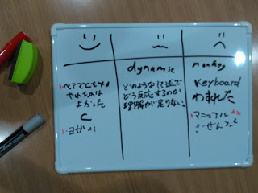
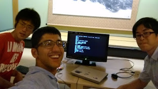
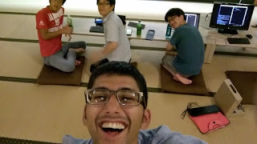
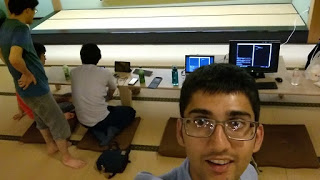

ZENIT ARCHIVE
IchigoJam + Docker/Linux/C Zen/Yoga Programming Workshop
Sep 7, 2018
今日はいろいろやってて楽しかったです！
We had fun doing many things today!
最初の方は20代男のしものさんとしゅんさんが四季の森文化館に来て、2階の禅部屋でIchigoJamをモニターにつながって簡単なペアプログラミングをやりました。
At first, Shimono, Shun, and myself, guys in our 20s, went up to the 2nd floor Zen room and did pair programming with IchigoJam connected to a monitor.
少し休憩を取って、ヨガも一緒に10分間ぐらいやって、みんな気持ちよかったと！
We took a break and did about 10 minutes of yoga and everyone said it felt really good!
その後はIchigoJamプロの道場さんが表して、シンプルなゲームの作り方を教えました。
After that, Dojo-san, an IchigoJam pro showed up, and helped us make a simple game.
次の休憩で4人で10分間ぐらい坐禅やってて、僕が頭がすっきりできたけど、10分間きついの一人もいました！
For the next break, all 4 of us did Zazen meditation for 10 minutes. I was able to calm down my mind, but one of us had trouble sitting still for that long!
その後は初心者ペアと経験者ペアに分けて、別々でプロジェクトを進みました。
After that we split into two pairs, beginners and advanced, to do our separate projects.
できたら、初心者ペアの方でIchigoJamのゲームを作って発表してもらいました。
A bit later, the beginners then presented their IchigoJam game that they made.
経験者ペアでWindows上のDockerのCentOS環境で簡単なCプログラムをviとgccで作って実行しました。
For the advanced pair, we used Docker on Windows to spin up a CentOS container to make a C program using vi and gcc.
最後は30分ぐらいかけて意見交換しました。シリコンバレースタイルのPivotal LabsのRetrospectiveというなやり方で！ペアとヨガが好きだった人が多くて、同時にさるに攻撃させるのは怖い人も多くて！
At the end, we spent about half an hour exchanging our opinions using the "retrospective" style from Pivotal Labs! Many people liked pair programming and Yoga, and just as many where scared of being attacked by monkeys!
Post not marked as liked
Recent Posts
See All
2019/12/15 ZenIT Workshop @ Tenryuuji - Blog Post
26
0
Post not marked as liked
2019/04/14 ZenIT Workshop @ Eiheiji - Blog Post
27
0
Post not marked as liked
University of Fukui Students Learn About the Silicon Valley and ZenIT
10
0
Post not marked as liked




